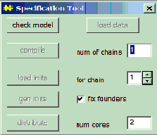
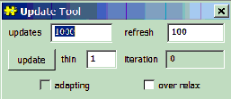
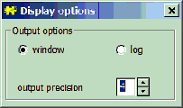
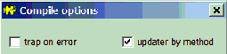
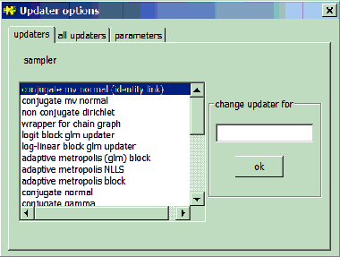
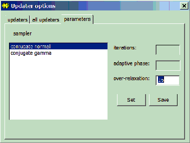
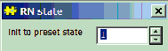

Model Menu
General properties
The commands in this menu either apply to the whole statistical model or open dialog boxes.
Specification...

This non-modal dialog box acts on the focus view (the window with its title bar highlighted).
check model: If the focus view contains text,
OpenBUGS assumes the model is specified in the
BUGS language. The
check model button parses the
BUGS language description of the statistical model. If a syntax error is detected the cursor is placed where the error was found and a description of the error is given on the status line (lower left corner of screen). If no syntax errors are found, the message "model is syntactically correct" should appear in the status line. If text is highlighted, parsing starts from the first character highlighted
(i.e. highlight the word
model), otherwise parsing starts at the top of the window even if the cursor is currently in a different location..
If the focus view is a
Doodle or contains a selected
Doodle (i.e. the Doodle has been selected and is surrounded by a hairy border
), OpenBUGS assumes the model has been specified graphically. If a syntax error is detected the node where the error was found is highlighted and a description of the error is given on the status line.
load data: The
load data button acts on the focus view; it will be grayed out unless the focus view contains text and a syntactically correct model has been checked.
Data can be identified in two ways:
1) if the data are in a separate document, the window containing that document needs to be the focus view when the
load data command is used;
2) if the data are specified as part of a document, the first character of the data (either the word
list if in S-Plus format, or the first array name if in rectangular format) must be highlighted and the data will be read starting with the first highlighted character.
See
Formatting of datafor details of how the data should be formatte
Any syntax errors or data inconsistencies are displayed in the status line. Corrections can be made to the data without returning to th
e check model stage. When the data have been loaded successfully, "Data Loaded" should appear in the status line.
The
load data button becomes active once a model has been successfully checked, and ceases to be active once the model has been successfully compiled.
num of chains: The number of chains to be simulated can be entered into the text entry field next to the caption
num of chains. This field can be typed in after the model has been checked and before the model has been compiled. By default, one chain is simulated.
compile: The
compile button builds the data structures needed to carry out MCMC sampling. The model is checked for completeness and consistency with the data. Any inconsistencies or errors are displayed on the status line.
A node called 'deviance' is automatically created which calculates minus twice the log-likelihood at each iteration, up to a constant. This node can be used like any other node in the graphical model.
This command becomes active once the model has been successfully checked. When the model has been successfully compiled, the message "model compiled" should appear in the status line.
load inits: The
load inits button acts on the focus view; it will be grayed out unless the focus view contains text. The initial values will be loaded for the chain indicated in the text entry field to the right of the caption
for chain. The value of this text field can be edited to load initial values for any of the chains.
Initial values are specified in exactly the same way as data files. If some of the elements in an array are known (say because they are constraints in a parameterisation), those elements should be specified as missing (
NA) in the initial values file.
This command becomes active once the model has been successfully compiled, and checks that initial values are in the form of an S-Plus object or rectangular array and that they are consistent with the model and any previously loaded data. Any syntax errors or inconsistencies in the initial value are displayed on the status line.
If, after loading the initial values, the model is fully initialized this will be reported by displaying the message"initial values loaded: model initialized". Otherwise the status line will show the message"initial values loaded but this or another chain contain uninitialized variables". The second message can have several meanings:
a) If only one chain is simulated it means that the chain contains some nodes that have not been initialized yet.
b) If several chains are to be simulated it could mean that no initial values have been loaded for one of the chains.
In either case further initial values can be loaded, or the
gen inits button can be pressed to generate initial values for
all the uninitialized nodes in
all the simulated chains. See the 'gen inits' section below for a description of how the values are generated.
Generally it is recommended to load initial values for all fixed effect nodes (founder nodes with no parents) for all chains, initial values for random effects can be generated using the
gen inits button.
The
load inits button can still be executed once the MCMC sampling has been started. It will have the effect of starting the sampler out on a new trajectory. A modal warning message will appear if the command is used in this context.
gen inits: The
gen inits button attempts to generate initial values by sampling either from the prior or from an approximation to the prior. In the case of discrete variables a check is made that a configuration of zero probability is not generated. This command can generate extreme values if any of the priors are very vague. If the command is successful the message
"initial values generated: model initialized" is displayed otherwise the message
"could not generate initial values" is displayed. If the fix founder box is checked instaed of generating initial values for founder nodes (nodes of topological depth one in the graphical model) the values of therse nodes is set to the mean of their prior.
The
gen inits button becomes active once the model has been successfully compiled, and will cease to be active once the model has been initialized.
The
distribute button will distribute the MCMC simulation over multiple processing cores where the number of cores is set in the
num cores field. Note the number of cores used should be a multiple of the number of chains (if it is not it will be rounded down so that it is). If the number of cores is equal to the number of chains then each chain is simulated on a seperate core. If the number of cores is greater than the number of chains then each MCMC chain will be simulated using several cores. The distributed version of the software uses MPI for communication between cores and with the user interface. Microsoft MPI must be installed for the distribute option to work. When the number of cores used is equal to the number of MCMC chains the distributed and non distributed version of the simulation should produce indentical result
Update...

This menu will become active after the model has been compiled and initialized. It has the following fields that accept user input:
updates:The number of MCMC samples to save. Thus,
updates *
thin MCMC updates will be carried ou
refresh: The number of updates divided by
thin between redrawing the screen.
thin: The samples from everyk
th iteration will be used for inference, wherek is the value of
thin. Setting
k > 1 can help to reduce the autocorrelation in the sample, but there is no real advantage in thinning except to reduce storage requirement
over relax: Click on this box (a tick will then appear) to select an over-relaxed form of MCMC (Neal, 1998) which will be executed where possible. This generates multiple samples at each iteration and then selects one that is negatively correlated with the current value. The time per iteration will be increased, but the within-chain correlations should be reduced and hence fewer iterations may be necessary. However, this method is not always effective and should be used with caution. The auto-correlation function may be used to check whether the mixing of the chain is improved.
Click on the
update button to start updating the model. Clicking onthe update buttonduring sampling will pause the simulation after the current block of iterations, as defined by
refresh, has been completed; the number of updates required can then be changed if needed. Clicking on the update button again will restart the simulation. This button becomes active when the model has been successfully compiled and given initial values.
The
iteration field displays the total number of MCMC updates divided by
thin that have been carried out.
The
adapting box will be ticked while the Metropolis or slice-sampling MCMC algorithm is in its initial tuning phase where some optimization parameters are tuned. The Metropolis and slice-sampling algorithms have adaptive phases of 4000 and 500 iterations respectively which will be discarded from all statistics. For details on how to change these default settings please see the
Updater Options section
.
When there are multiple chains, a single update is generated for each chain and then the cycle is repeated for the requested number of updates. Random numbers are currently generated from a single random number sequence shared across the chains. When thin>1, thinned updates are drawn from the first chain, then thinned updates are generated from the second chain, and so on. However if thin=1, and the monitored samples are thinned via
Inference > Samples, the output will be different, since we are then looping over chains within each iteration.
Script
The Script menu item is used to execute "batch scripts" from the GUI-mode. If the focus-view contains a series of
OpenBUGS batch-mode commands, then selecting the script menu item from the
Model menu will cause the script to be executed. A subset of the script commands can be executed by highlighting them. Highlighting part of a batch command will likely produce an error. The script menu item allows batch mode execution to be mixed with GUI execution so batch scripts can be created incrementally and some repetitive tasks under the GUI (e.g., specifying variables to be monitored) can be automated during the model building/testing analysis phase. See
Scripts and Batch-mode for more details.
Output options...

OpenBUGS will either produce output in windows if the Output option is set to window, or produce output in the log window if the Output option is set to log.
The precision to which
OpenBUGS displays output is controlled by the output precision field.
Compile options...

updater by method:
OpenBUGS chooses update algorithms for the model in a "by method" order if this box is checked, otherwise updaters are chosen by order of node name.
trap on error: Causes
OpenBUGS to display a "trap" window when an unidentified error occurs, instead of displaying a short message "Sorry, something went wrong..." in the status bar. Trap windows contain information intended to help programmers fix the source code of OpenBUGS. Therefore some experts may find them useful for identifying difficult errors, but most users will find them more confusing than the default message.
Updater options...
Tabbed dialog box for controlling how
OpenBUGS updates the model.
The
updaters tab is used to influence which updater algorithms are used, while the
parameters tab is used to adjust the default parameters of the chosen algorithms.
The updater (sampler) algorithms that OpenBUGS has available are displayed in the list box underneath "sampler". The radio button can be used to enable / disable the selected sampler. The radio buttons are only active before a model has been compiled. They control which algorithms
OpenBUGS will consider using when the model is compiled.
Once the model has been compiled, it is possible to change the algorithm used for a node (or a block of nodes) by typing the name of the node (variable) in the text entry box underneath "change updater for", selecting a new updater algorithm from the list and clicking ok. You can see which updaters are being used for each node by clicking
Info > Updaters (by name) from the menu bar. The info menu can also be checked after a change is requested to confirm the change was made. There is more information on the resulting list in the
Info menu manual page. To change the updater for a block of nodes (from Info>Updaters (by name), enter the name of the first node in the block. A block updater for a block of nodes can only be changed to another block updater for the block of nodes.

The
parameters tab of the dialog lists the actual updater algorithms used in sampling nodes in the compiled model. To change the default parameters of one of these updaters, select it from the list and then edit the appropriate fields. Clicking
set will modify the sampling parameters for the duration of the current
OpenBUGS session; the default parameters will be restored when
OpenBUGS is restarted. Clicking
save will make changes to the default parameters of the algorithm persistent across
OpenBUGS sessions. Changes to the default parameters can only be made after a model has been compiled.

Random number generator...
.

Opens a non-modal dialog box, which is available only after compilation is completed and before any updates have been performed. The state can be changed after initial values are generated but before updates have been performed, however, this is not recommended.
The internal state of the random number generator can be set to one of 14 predefined states using the up down arrows. Each predefined state is 10
12 draws apart to avoid overlap in random number sequences.
Externalize...
This option writes out all the internal data structures that OpenBUGS has created for a compiled model . It provides a way of "saving" the model for future use. The user is prompted to enter a filestem name in a dialog box and a file called 'filestem.bug' is created in a folder called "Restart" in the OpenBUGSxxx program folder. If there were no errors when saving the compiled model, the message "model externalized to file ok" is displayed in the status bar.
The output files can be very large; users should remove these files when they are no longer needed. Script commands (see
Scripts and Batch-mode) are a better method for creating re-producible results, especially if these results need to be sent to other users.
Internalize...
This option reads in all the internal data structures that OpenBUGS needs to re-create an executing model from a file created by Externalize. It provides a way of "restarting" the model for further use. This option will open a window containing a BUGS language description of the restarted model and all the tool dialogs will be restored to the state when the model was last executed. If there were no errors when internalizing the saved model, the message "model internalized from file ok" is displayed in the status bar.